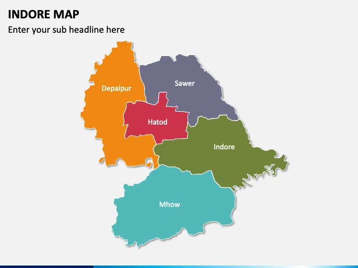
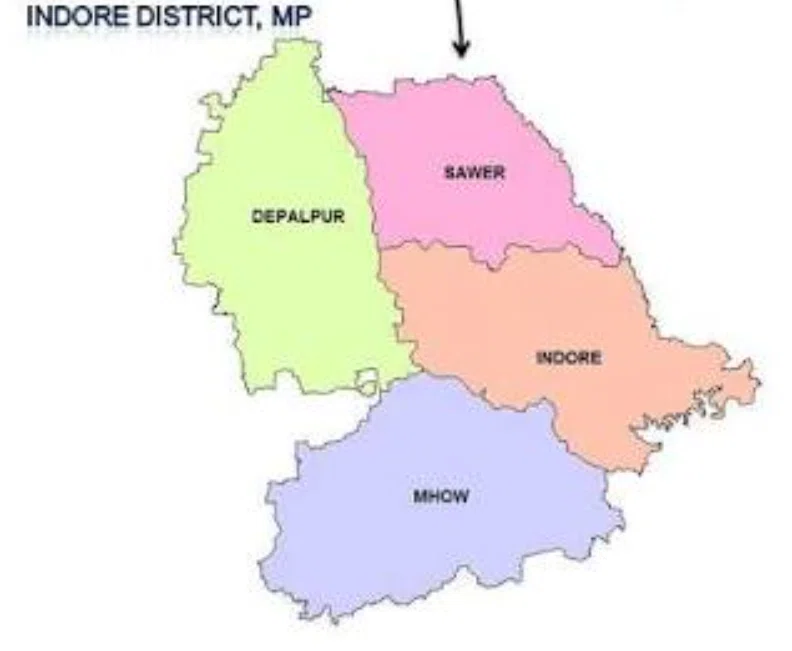

Indore, Madhya Pradesh, India
— Adwit Tiwari · Roll 250004004
URBAN ANALYSIS OF
Madhya Pradesh · India's Cleanest City
Assignments 1, 2 & 3 — City Profile, Demography & Waste Management
Submitted: August 2026
Why Indore for a three-part urban study
Boundary + 5 major infrastructure projects
Population, age, sex, literacy, migration, housing
Decadal database (2014–2026) + trends
Findings, data gaps, planning implications


Hover · Click · Rotate with your mouse
RSPM baseline: 142 μg/m³
City declared bin-free
RSPM falls to 76 μg/m³
13 lakh MT · 100 acres reclaimed
550 TPD · Asia's largest
Super Swachh League
Indore is a rare case where rapid demographic growth and rapid service improvement moved together — but deep spatial inequities remain.
19.94L population · 35.22% growth · 942 sex ratio · 65.07% working-age
1,115 TPD · 100% D2D · Zero-landfill · 8× Rank 1
Questions & Discussion
Indore · India's Cleanest City · August 2026
Appendix
The following slides contain the complete detail behind every chart, number and finding shown in this presentation. Navigate freely for reference.